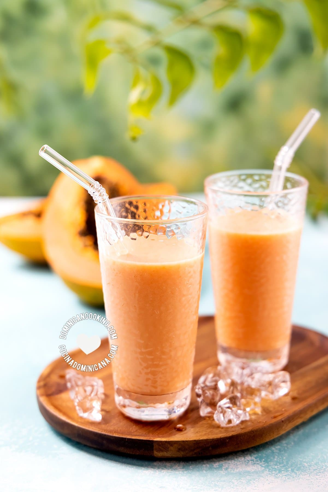

Batida de lechosa es una de las recetas más populares de nuestro blog, y una de las bebidas más populares de la
República Dominicana. Si alguna vez la has probado, seguro que no necesitas convencerte. Date prisa y sírvete un
vaso de esta maravilla helada y cremosa.

ingrediente
3 tazas lechosa, (papaya) cortada en cubos
1 cucharadita extracto de vainilla
3 tazas hielo
1 litro leche evaporad
1 taza azúcar, (podrías no usarla toda)
PASO DE LA RECETA
Licuar: Pon los cubos de lechosa, vainilla, hielo, leche evaporada y la mitad del azúcar en la batidora
y licúa a
alta velocidad hasta que el hielo se haya licuado.
Servir
Esta receta fue copiada de la pagina https://www.cocinadominicana.com/batida-de-lechosa